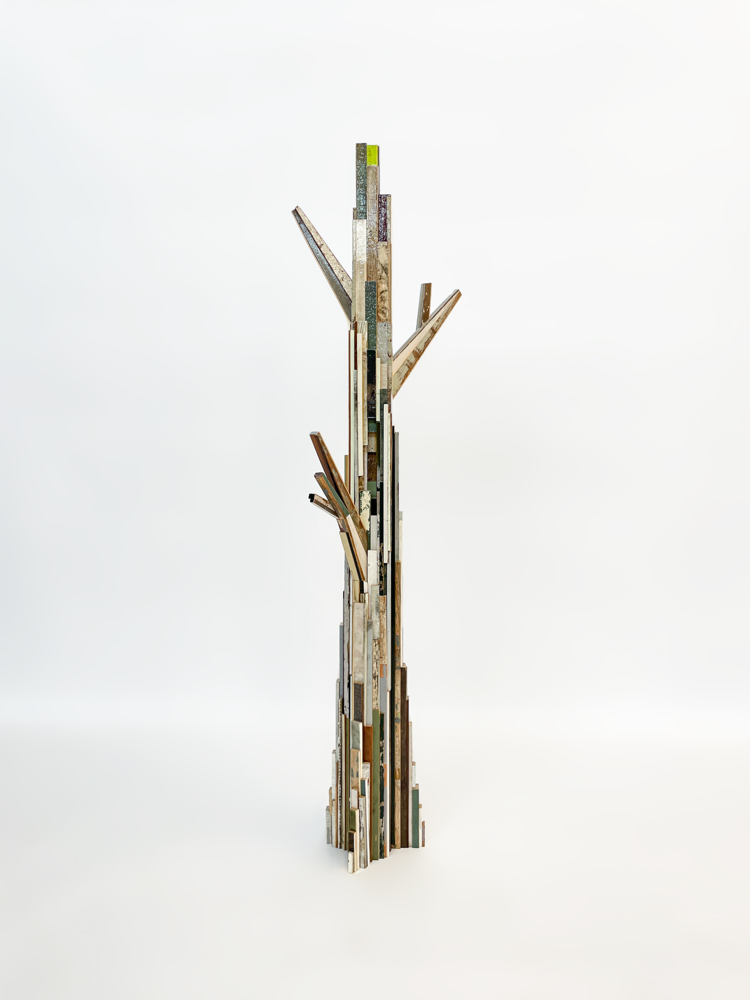
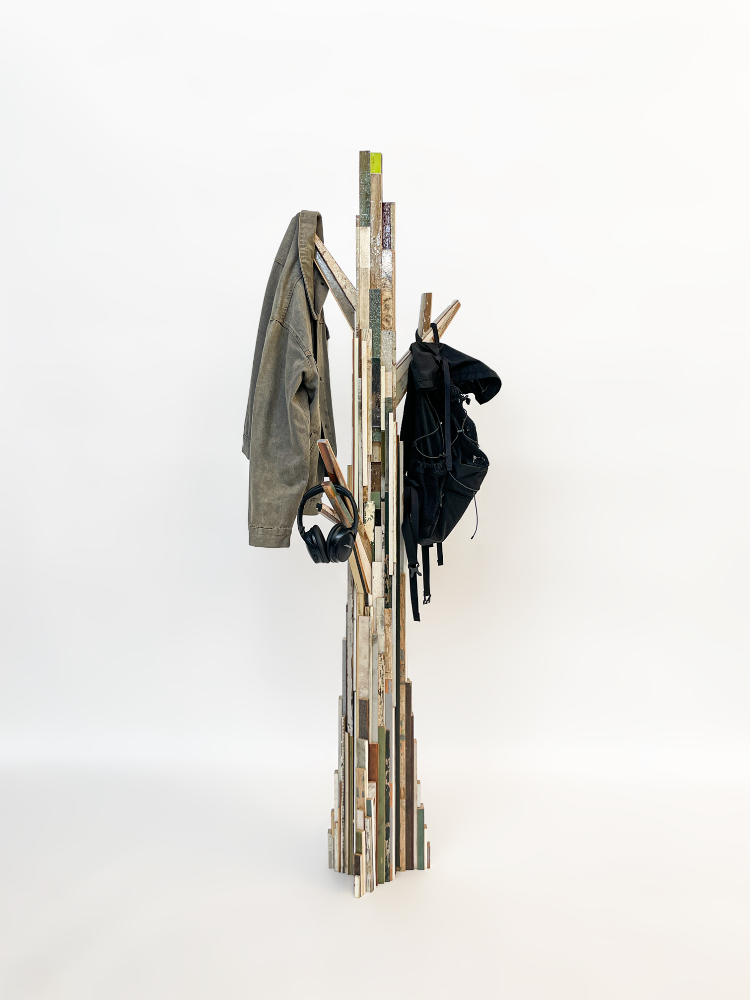
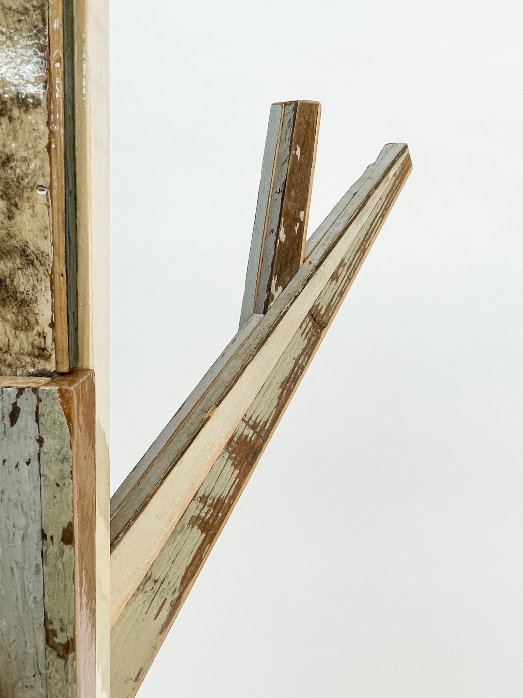
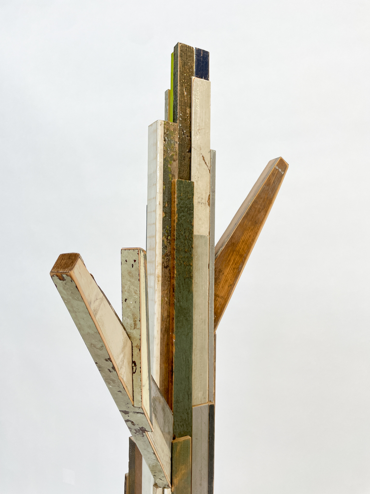
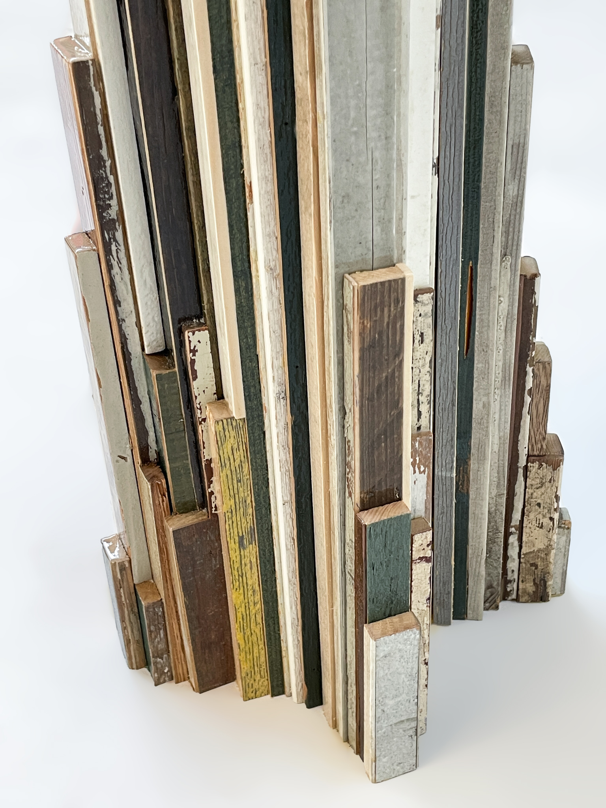
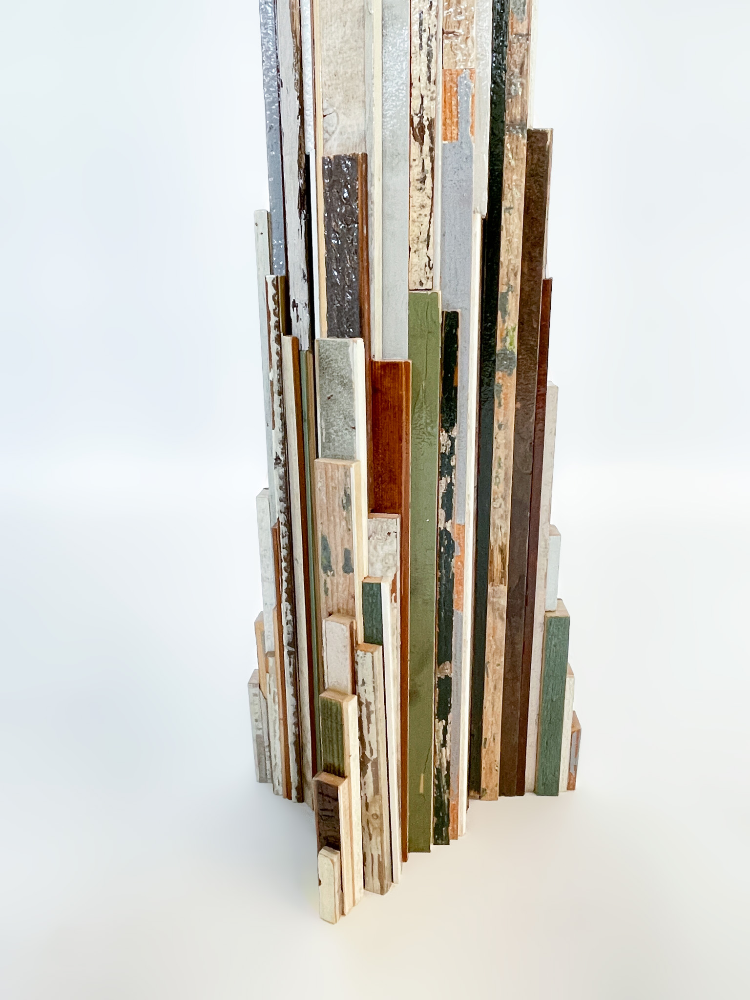
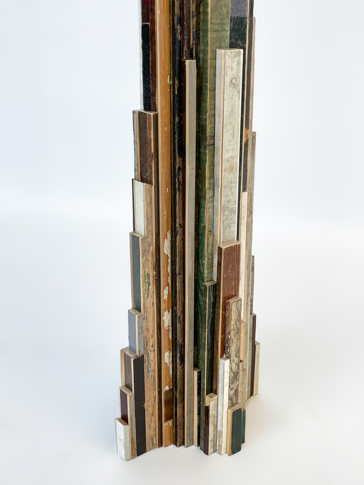
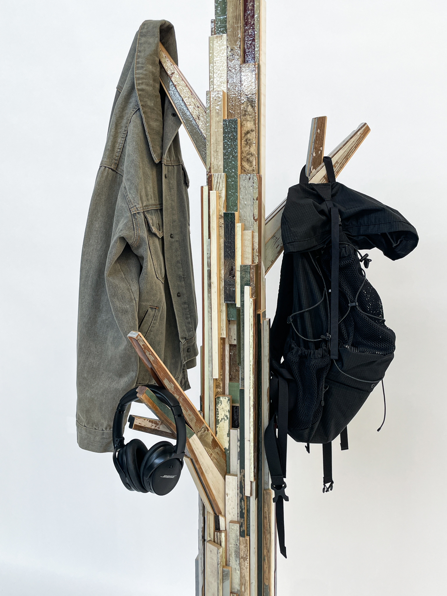
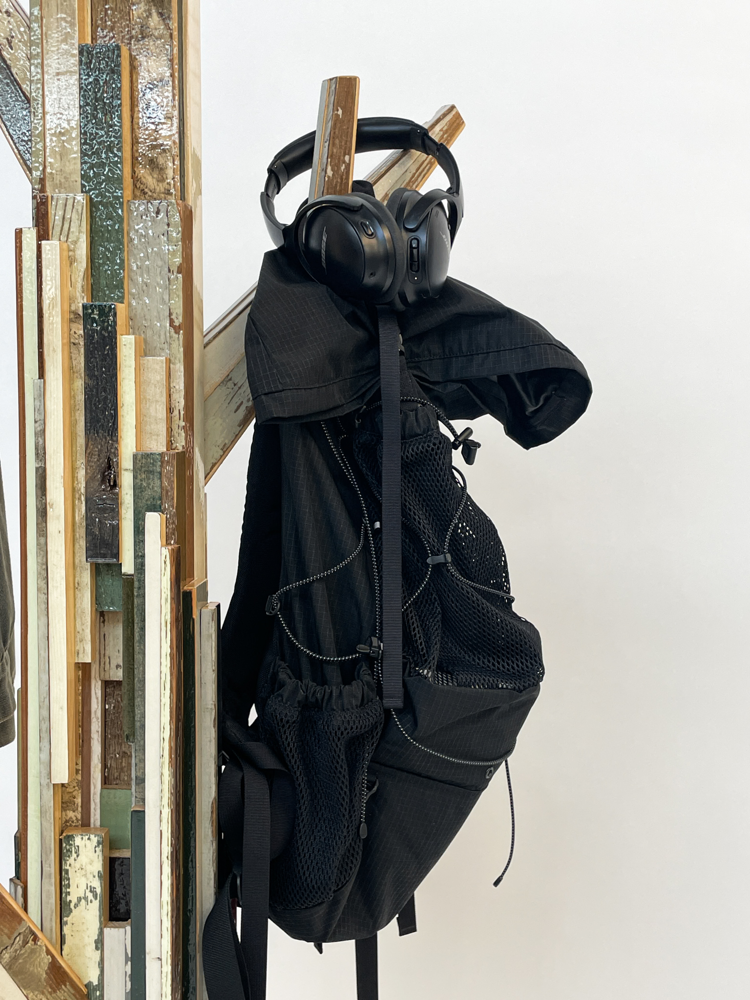
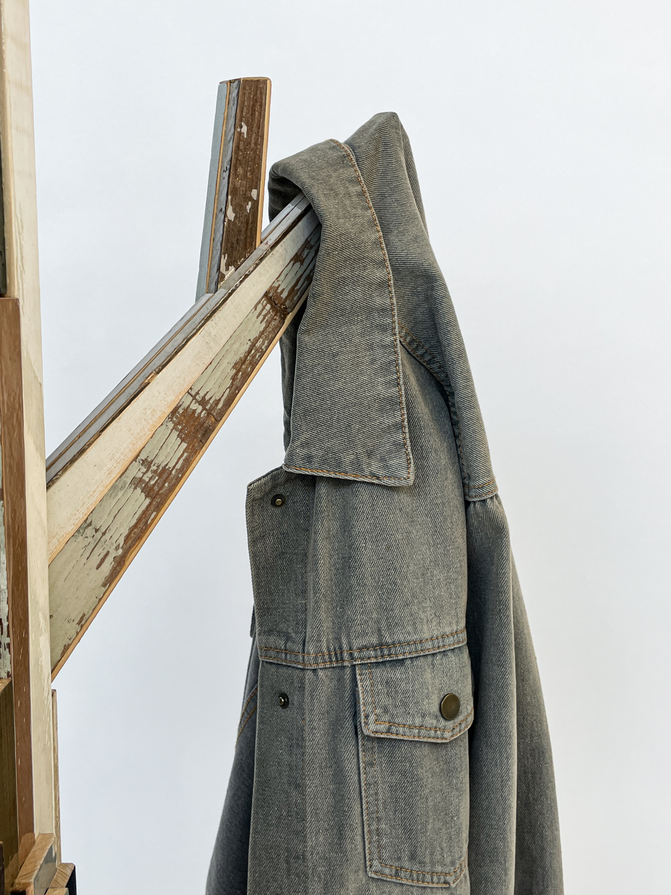
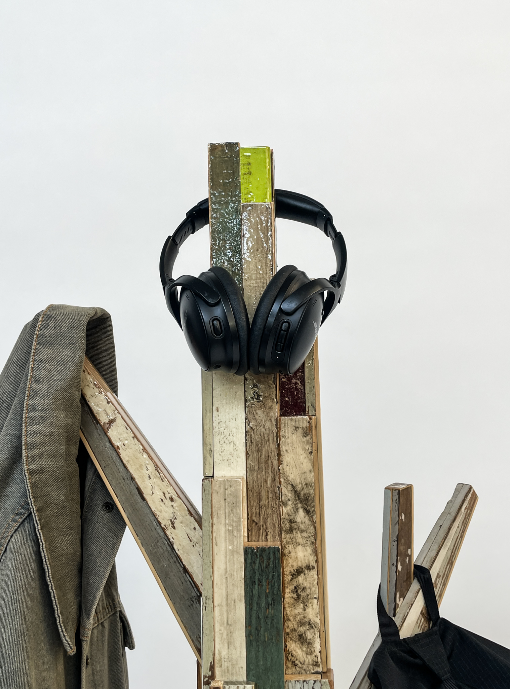
TREE FOR FREES
2025
45(W) × 193(H) × 60(D) cm
Leftover wood
45(W) × 193(H) × 60(D) cm
Leftover wood
I carefully selected, gathered, cut, and assembled
fragments of old furniture that once filled the shelves of the studio.
Among the offcuts of various thicknesses and sizes
that emerge during the working process,
the thin and small pieces became intricate details,
drawing the viewer in for a closer look.
Wood scraps, waiting for another use,
take on the form of a tree once again,
suggesting the potential to become something else.
-
I designed and crafted this project during my internship at Piet Hein Eek,
using materials from the studio.
fragments of old furniture that once filled the shelves of the studio.
Among the offcuts of various thicknesses and sizes
that emerge during the working process,
the thin and small pieces became intricate details,
drawing the viewer in for a closer look.
Wood scraps, waiting for another use,
take on the form of a tree once again,
suggesting the potential to become something else.
-
I designed and crafted this project during my internship at Piet Hein Eek,
using materials from the studio.